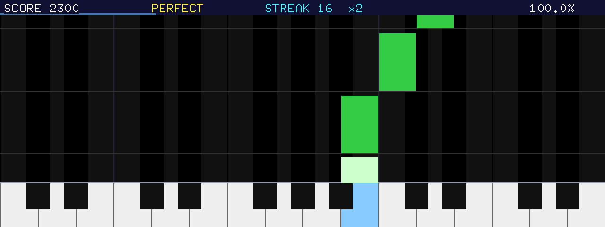
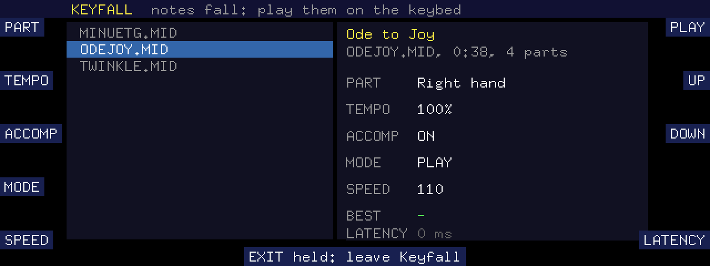
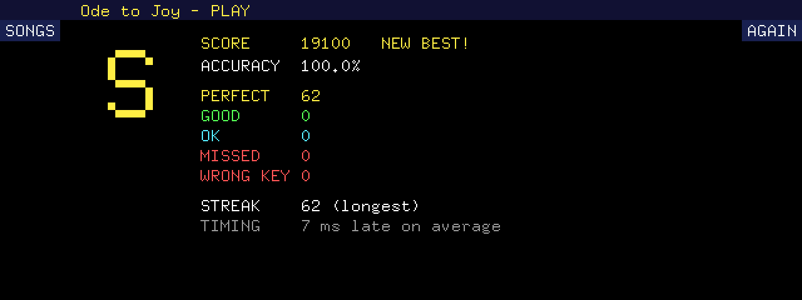

kn5000_homebrew/demos/kn7000_keyfall (the folder
KEYFALL\ on the SD card). Program and manual: GPLv3 or later. The songs supplied are public-domain
pieces arranged for the game. Headings set in Archivo (SIL Open Font License 1.1).
Keyfall shows a keyboard along the bottom of the display, each key right above its own key of the keybed, and a song's notes falling down towards it. Strike each key as its note reaches the keyboard. Every key you strike is judged by its timing: PERFECT, GOOD, OK, or a WRONG KEY if no note was due on it; a note nobody strikes is MISSED. A score, a streak and an accuracy count up as you go, and a results page with a grade follows the song.
The songs are Standard MIDI Files on the SD card. You choose the part you play: a track of the song, or both hands when it has a track for each. The other parts are the accompaniment: Keyfall sends them to the instrument as a sequencer on its MIDI IN would, and the instrument plays them with its own sounds.
The keybed keeps its sound. Keyfall only listens to it, so whatever sound the panel has chosen for the keybed is what you play the song with, and the rest of the panel works as always.
The folder KEYFALL\, beside the program menu, holds:
| file | what it is |
|---|---|
| KN7APP.BIN | the link between the game and the instrument's firmware |
| KEYFALL.BIN | the game |
| MANIFEST.TXT | its name in the program menu: "Keyfall (piano game)", in Games |
| *.MID | the songs |
| SCORES.TXT | the best scores, written by the game |
| KFLOG.TXT | a log of what the game did, for finding faults |
Press DISK MENU, then STYLE CONVERT, and OK with the loader floppy in the drive. The program menu appears.
Open the Games folder, choose "Keyfall (piano game)" with the button beside it, and press RUN. After a few seconds the song list appears.
To leave, hold EXIT for a second and a half. The instrument shows its own message and asks "Continue Next?": NO returns to the instrument, YES starts the program menu again.

The left column lists the MIDI files in the folder; the right one shows the song selected (its title, length and number of parts) and how it will be played. Turn the TEMPO/PROGRAM wheel, or press LCDR 2 (UP) and LCDR 3 (DOWN), to choose a song; the soft keys set the rest.
| button | label | what it does |
|---|---|---|
| LCDL 1 | PART | The part you play. Each track of the song in turn, and "Both hands" when one track is named for the right hand and one for the left. |
| LCDL 2 | TEMPO | The song's speed: 100%, 90% … 50%. A slower tempo spreads the notes out; the judging's timing stays the same. |
| LCDL 3 | ACCOMP | The accompaniment (the parts you do not play) on or off. |
| LCDL 4 | MODE | PLAY: the game, judged. WAIT: the song stops at each note until you strike its key (for learning a piece). DEMO: the song plays by itself, your part too. |
| LCDL 5 | SPEED | How fast the notes fall: 70 to 180 lines a second. Faster shows less of what comes, but spaces the notes more. |
| LCDR 1 | PLAY | Starts the song. |
| LCDR 5 | LATENCY | Milliseconds taken off the time of every key before it is judged (-40 to 100). If the results say you are late on average although you play in time, raise it by that much. |
Keyfall reads the keys the keybed sends to MIDI OUT (the parts RIGHT 1, RIGHT 2 and LEFT). While AUTO PLAY CHORD is on, the keys left of the split point are the accompaniment's chord keys and send nothing: parts for the right hand play as they are; for a left-hand part, or both hands, turn AUTO PLAY CHORD off first.
| key struck | judgement | points |
|---|---|---|
| within 50 ms of the note | PERFECT | 100 |
| within 100 ms | GOOD | 70 |
| within 150 ms | OK | 40 |
| no note due on that key | WRONG KEY | 0 |
| a note not struck in time | MISS | 0 |
The points are multiplied by 1 plus a tenth of the streak (the notes struck in a row), at most by 4. A miss or a wrong key ends the streak. The accuracy counts each note as 100, 70, 40 or 0 per cent; wrong keys do not lower it.
Press EXIT to stop the song at once; the results of what was played follow. Holding EXIT leaves Keyfall altogether.
The song's other parts go to the instrument's MIDI parts PART 4 to PART 16 (channel 10 the drums), as when a computer plays a song through MIDI IN. Their sounds are the General MIDI ones the song names. Keep the instrument's MIDI settings as they come (MIDI menu, PART SETTING: PART 4 to 16 on channels 4 to 16).

The grade comes from the accuracy: S from 95%, A from 85%, B from 70%, C from 50%, D below. TIMING says how early or late your keys came on average: a steady lateness you cannot hear is better set with LATENCY on the song list.
A game played to the end in PLAY mode that beats the best score for that song, part and tempo is saved in
SCORES.TXT ("NEW BEST!"); the song list shows the best as BEST. WAIT shows how many notes were
played and how many keys were wrong; DEMO, nothing to count.
LCDR 1 (AGAIN) plays the same song again; LCDL 1 (SONGS) or EXIT returns to the song list.
Copy any Standard MIDI File (format 0 or 1) into the card's KEYFALL\ folder, with a short name
ending in .MID (eight letters or digits at most before the dot). Each track's notes on one channel
become a part named after the track. A track named "Right hand" (or RH, Melody) is offered first; with one named
"Left hand" (or LH) as well, "Both hands" can be chosen.
System exclusive messages in a file are left out, so that a song cannot change the instrument's settings. Everything else of the other parts (notes, program changes, volume, pan, the sustain pedal, pitch bend) is sent.
The songs supplied: Twinkle, Twinkle, Little Star (traditional), Ode to Joy (Beethoven) and the
Minuet in G (Petzold), each with its right hand and an accompaniment. They are written as text and turned
into MIDI files by tools/songs/mksong.py, whose README describes the notation.
| what happens | why, and what to do |
|---|---|
| Keys of the left side count for nothing. | AUTO PLAY CHORD is on: those keys choose chords and send no notes. Turn it off. |
| Every key comes late (TIMING in the results). | Raise LATENCY by about that much. |
| The accompaniment is silent or plays odd sounds. | The MIDI parts PART 4-16 are off or on other channels (MIDI menu, PART SETTING), or LOCAL/receive settings were changed. The initialized MIDI settings play it. |
| "This file cannot be played". | Not a MIDI file Keyfall reads (SMPTE timing, format 2), or no notes outside the drums. |
| A blue screen. | The game stopped: photograph the screen, switch the instrument off and on.
KFLOG.TXT on the card tells what it did last. |
Nothing is stored in the instrument: no panel memory, setting or file but SCORES.TXT and
KFLOG.TXT in the game's own folder.
While the accompaniment plays, the MIDI parts PART 4 to PART 16 receive program changes, bank selects, volume, pan and expression, as from any sequencer. When the song ends, or Keyfall is left, every channel it used gets Reset All Controllers and All Notes Off; the sounds chosen stay on those MIDI parts until they receive others or the instrument is switched off. The keybed's own parts (RIGHT 1, RIGHT 2, LEFT) receive nothing.
The TEMPO/PROGRAM wheel and the soft keys beside the display are Keyfall's while it runs: the tempo does not change when the wheel chooses a song.